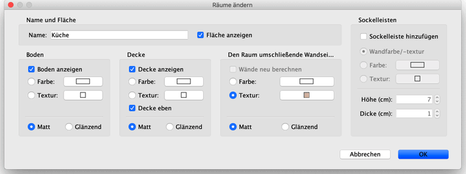

|
Der Mauszeiger �ndert sich, wenn er sich �ber einem dieser Anfasser befindet, um
anzuzeigen, dass der betreffende Punkt oder Text durch Klicken und Ziehen verschoben
werden kann. W�hrend Sie die Maustaste gedr�ckt halten, helfen Ausrichtungslinien und
Magnetismus an Schnittpunkten von W�nden Ihnen dabei, eine Raumecke oder einen anderen
besonderen Punkt zu treffen.
Wird ein Raum mit der Maus ge�ndert, so wird seine Darstellung sowohl im Wohnungsplan
als auch in der 3D-Ansicht aktualisiert.
Der Name und die 3D-Attribute des Raums k�nnen im Dialog R�ume �ndern angepasst
werden. Dieses erscheint, wenn Sie doppelt auf den Raum im Wohnungsplan klicken, oder
indem Sie Plan > R�ume �ndern… ausw�hlen, nachdem Sie den Raum
ausgew�hlt haben.

Im Raumeditierfeld k�nnen Sie den Namen des ausgew�hlten Raums anpassen. Zudem k�nnen
Sie festlegen, ob seine Grundfl�che im Wohnungsplan angezeigt werden soll.
Es ist auch m�glich einzustellen, ob Boden und Decke des ausgew�hlten Raums in der
3D-Ansicht angezeigt werden sollen. Dabei k�nnen auch seine Farbe, seine Textur und
seine Glanzeigenschaften gesetzt werden.
Ber�hrt der ausgew�hlte Raum eine oder mehrere W�nde, oder hat er einen geringen
Abstand zu einer oder mehreren W�nden, zeigt der Dialog R�ume �ndern auch die
Bereiche Den Raum umschlie�ende Wandseiten und Sockelleisten an. In
diesen Bereichen k�nnen Sie Farbe oder Textur der Wandseiten, die vom Raum aus zu
sehen sind, sowie ihrer Sockelleisten konfigurieren. Die Sockelleisten sind nur
konfigurierbar, wenn das Ankreuzfeld Sockelleiste hinzuf�gen aktiviert ist.
Falls n�tig, w�hlen Sie das Ankreuzfeld W�nde neu berechnen, um die W�nde, die
durch andere nahegelegene R�ume hindurchlaufen, automatisch zu unterteilen.
 |
|
 |
| Nicht neu berechnete W�nde |
|
Neu berechnete W�nde |
|